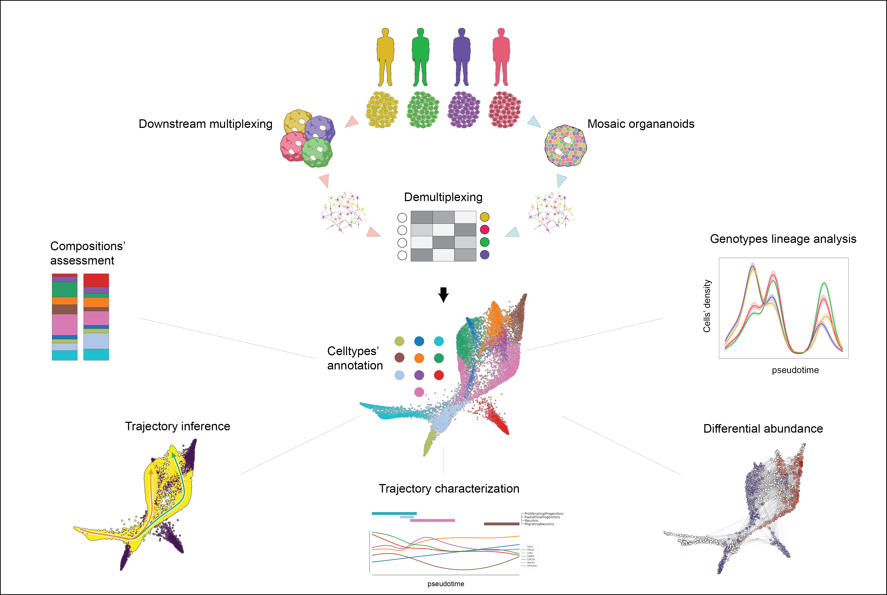

Organoid Multiplexing
This repo contains the code used to analyze Single cell data of organoid Multiplexing

Docker image for main analysis can be retrieved via docker pull testalab/downstream:organoidMultiplexing-1.1.0
After alignment of each sample, Cellranger's output: features, barcodes and count matrix should be placed in data/Sample*/filtered_feature_bc_matrix respective directories
Additional resources should be placed in data/resources.
genes.gtf (gex-GRCh38-2020-A gtf), KOLF2C1 wgs data from hipsci, single cell eqtl data from jerber et al. (https://doi.org/10.1038/s41588-021-00801-6)
In addition pipeline for consensus deconvolution can be found at https://github.com/GiuseppeTestaLab/demultiplexing-workflow
Finally VarAdata were generated using the SCanSNP version https://github.com/GiuseppeTestaLab/SCanSNP specifying --mode matrixgen
01_HVGs_joining.ipynb
01.1_Dataset_Preprocessing_DownD50.ipynb
01.2_Dataset_Preprocessing_UpD50.ipynb
01.3_Dataset_Preprocessing_DownD100.ipynb
01.4_Dataset_Preprocessing_UpD100_1.ipynb
01.5_Dataset_Preprocessing_UpD100_2.ipynb
01.6_Dataset_Preprocessing_DownD250.ipynb
01.7_Dataset_Preprocessing_UpD300.ipynb
02_Dataset_Merging.ipynb
03_Dataset_Not_Integrated_JointScale.ipynb
04_Dataset_Integration_Harmony.ipynb
05_Clusters_Annotation_All.ipynb
05.2_inGestion.ipynb
06_Exploration.ipynb
07_Paga.ipynb
08_DA.ipynb
08.0_Astrocytes_HVGs.ipynb
08.1_Astrocytes_Lineage.ipynb
09.0_Cajal_HVGs.ipynb
09.1_Cajal_Lineage.ipynb
10.0_Exc_HVGs.ipynb
10.1_Exc_Lineage.ipynb
11.0_Interneurons_HVGs.ipynb
11.1_Interneurons_Lineage.ipynb
12.0_MigratingNeurons_HVGs.ipynb
12.1_MigratingNeurons_Lineage.ipynb
13.0_varAnndata_prep_new.ipynb
13.1_SantyCheck.ipynb
13.2_ASE_explo.ipynb
15_Lines_Balance.ipynb
16_Tools_comparison.ipynb
Repository will be complete upon publication